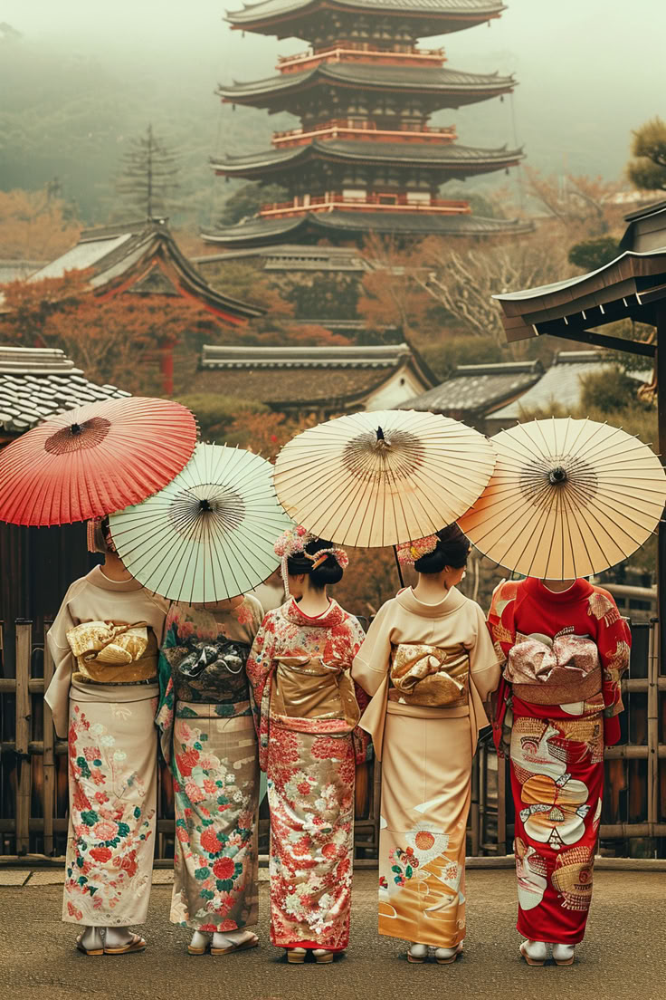

Культура Японії
Японська культура поєднує традиції та сучасність, від самураїв до робототехніки.
Зануртесь в багатство культурної спадщини Японії!


Ключові елементи культури Японії
- Сакура
- Японська вишня, яка символізує швидкоплинність життя та є важливою частиною культури.
- Кімоно
- Традиційний японський одяг, який носили в повсякденному житті в минулому і зараз використовують на свята.
- Ікебана
- Мистецтво аранжування квітів, що акцентує увагу на гармонії, ритмі та простоті.
- Гейші
- Традиційні японські артистки, які розважають гостей музикою, танцями та розмовами.
- Чайна церемонія
- Ритуальне приготування та споживання чаю, що втілює принципи гармонії, поваги, чистоти та спокою.